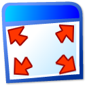
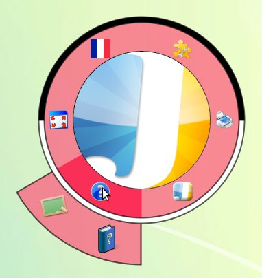
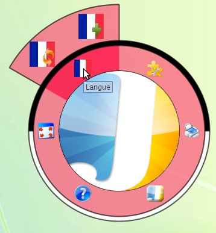
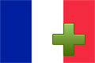
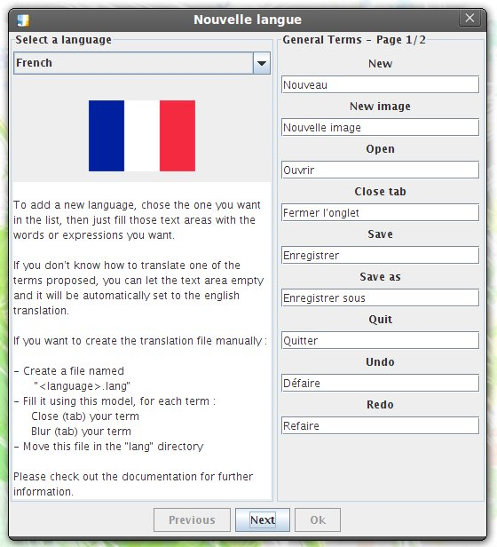
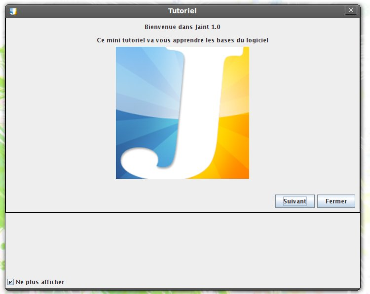

Palette d'option
Gestionnaire de plugins
Imprimer
Fenetre à propos
 Aide
Aide

Passer en mode plein ecran
Gestionnaire de langue

 Tutorial (Voir)
Tutorial (Voir)
 Aide en ligne
Aide en ligne


Ajouter une langue (Voir)
Modifier la langue
Le gestionnaire permet de créer une langue
Pour cela il suffit de traduire à partir de l'anglais tous les noms des boutons

Ce mini tutorial vous apprendra à utiliser les principales fonctions de Jaint
A savoir les trois différentes palettes ainsi que la rotation libre
